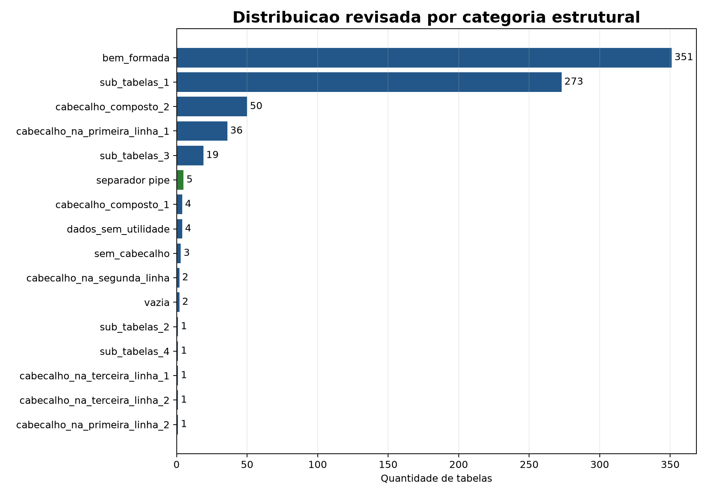
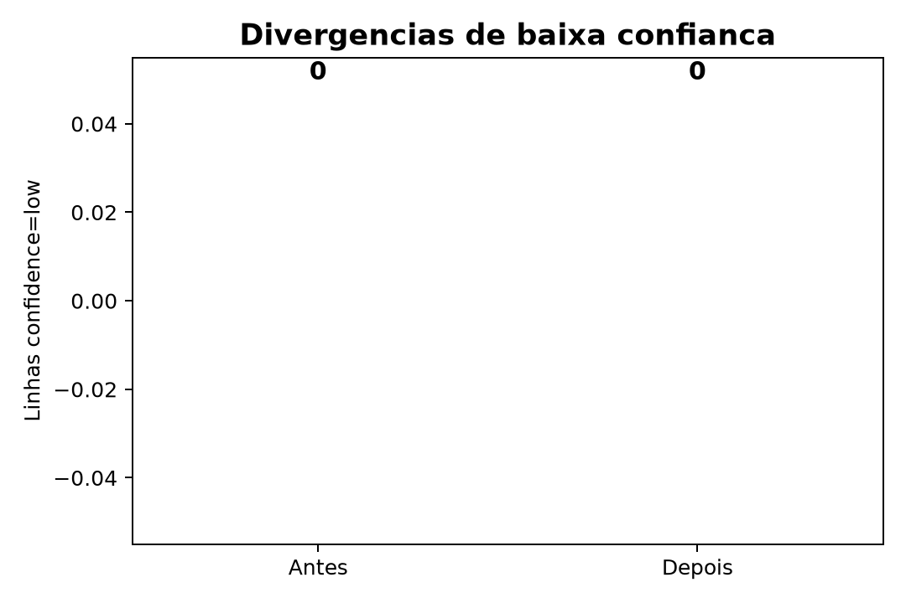

Sumario Executivo
A revisao consolidou os CSVs de classificacao, qualidade, inventario e deduplicacao. As cinco divergencias criticas de baixa confianca foram corrigidas para separador pipe, com evidencias cruzadas em inventario, dedup e relatorio de tratamento.
754
registros auditados
0
confidence=low
5
corrigidas issue #96
0
amostras brutas locais
Ponto de controle: a branch atual nao contem
data/table_samples/. Portanto, esta entrega comprova a auditoria completa dos CSVs de controle com pandas e evidencia versionada. A varredura linha a linha dos CSVs brutos deve ser reexecutada quando as amostras forem disponibilizadas ou via modo DB.
Figura 1 - Distribuicao revisada das categorias estruturais.

Figura 2 - Baixa confianca antes/depois das correcoes pandas.